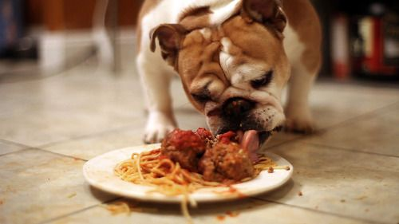

Ingredients
- 2 tablespoons extra-virgin olive oil
- 1/2 yellow onion, diced, about 1 cup
- 1 medium carrot, diced
- 4 cups chopped cremini mushrooms
- 1 tablespoon chopped rosemary
- 1/2 cup walnuts, crushed
- 2 garlic cloves, minced
- 1 tablespoon balsamic vinegar
- 1 tablespoon tamari
- 1 14-ounce can fire roasted diced tomatoes
- 1 1/2 cups cooked brown or green lentils
- 1 tablespoon tomato paste
- 1 teaspoon dried sage
- 1 cup halved cherry tomatoe
- 8 ounces spaghetti
- 1 cup sliced fresh basil, optional
- 1/2 cup toasted pine nuts
- red pepper flakes
- shaved pecorino cheese, skip if vegan
- Sea salt and freshly ground black pepper
Preparation
- Heat the oil in a large skillet over medium heat. Add the onion and carrot and pinches of salt and pepper and cook until they begin to soften, about 3 minutes. Add the mushrooms, another pinch of salt, and cook until soft, stirring only occasionally, about 8 more minutes.
- Stir in the rosemary. Push everything to one side of the pan to make room for the walnuts. Add the crushed walnuts and toast them for about 30 seconds, then stir everything together. Stir in the garlic, then add the balsamic vinegar and tamari and stir to incorporate. Add the tomatoes, lentils, tomato paste, sage and fresh cherry tomatoes, and stir.
- Reduce the heat and simmer for 20 to 30 minutes until the sauce thickens. Season to taste.
- Bring a large pot of salted water to a boil. Prepare the pasta according to the instructions on the package, cooking until al dente. Drain and add the pasta to the pan with the sauce.
- Serve with fresh basil, pine nuts, pinches of red pepper flakes and pecorino cheese, if desired.
Return to top
Back to main